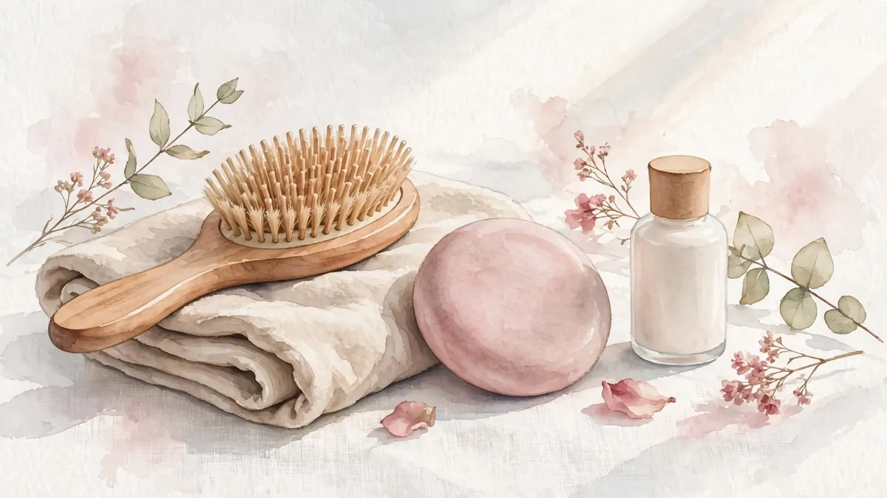
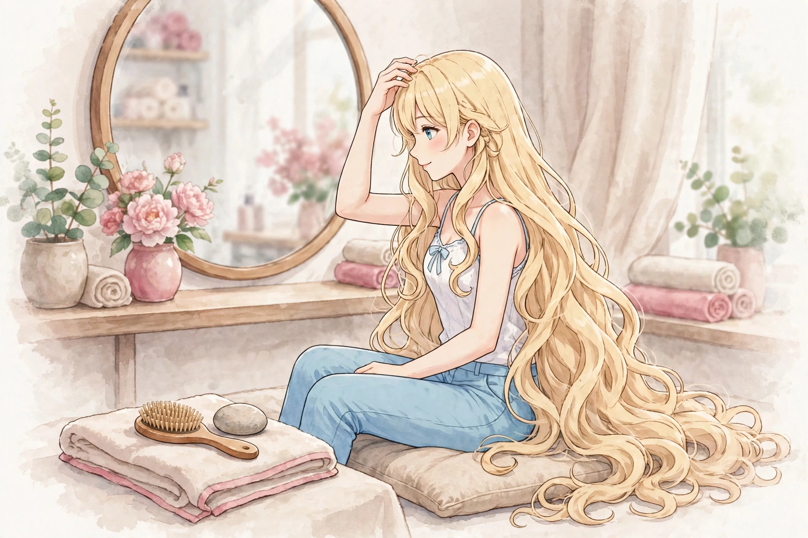

トップ ＞ ヘアケア ＞ 頭皮のこわばりチェック（ヘッド施術の現場から）
頭皮のこわばりチェック（ヘッド施術の現場から）

ヘッド施術では、最初に頭皮の状態を指で触って確かめます。そのとき見ているひとつが、頭皮の「動き」です。頭皮が指の下でよく動く場所と、動きにくい場所があります。この記事では、施術の現場で行う触り方を、自宅でできるセルフチェックとして紹介します。これは状態を確かめるためのもので、医療行為や診断ではありません。
チェックは「指で動かしてみる」
やり方はシンプルです。両手の指の腹を頭皮に当て、髪ではなく頭皮そのものを、前後左右に小さく動かしてみます。動かしたときに、頭皮が指と一緒に滑るように動くか、つっぱって動きにくいか。その感触の違いを確かめます。爪は立てず、力は弱めに。痛みを感じるほど押す必要はありません。
最初は「違いが分からない」で構いません。何度か触るうちに、場所ごとの感触の違いに気づけるようになります。施術者も、毎日の仕事の中でこの感覚を磨いています。
場所ごとに、感じ方は違う
頭頂部、側頭部、後頭部では、頭皮の厚みや動き方がもともと異なります。また、利き手側とそうでない側で、触り方の癖も出ます。チェックの目的は、良い・悪いを判定することではなく、「いつもの自分の状態」を知ることです。いつもと違う張り感に気づくことが、休むタイミングを考える材料になります。
チェックは、シャンプーの前や、入浴後のリラックスした時間に行うのがおすすめです。髪が乾いた状態の方が、頭皮の動きを感じ取りやすくなります。
チェックを習慣に組み込む
セルフチェックは、毎日完璧に行う必要はありません。週に数回、ドライヤーの前など決まったタイミングに組み込むと続けやすくなります。気になる状態が続く場合や、痛み、かゆみ、できものなどがある場合は、セルフケアで判断せず、皮膚科などの専門家に相談してください。
頭皮は、自分では見えない場所です。だからこそ、触って確かめる習慣が役に立ちます。施術の現場の「触診」の考え方を、日常のケアにも取り入れてみてください。
チェックのときに意識したいのは、左右の違いです。利き手で触ると力の入り方が左右で変わるため、同じ場所でも感触が違って感じられることがあります。気になる場所は、両方の手で触り直してみてください。また、チェックの結果をスマートフォンのメモなどに簡単に残しておくと、季節や生活の変化との関係が後から見えてきます。記録は、自分の状態を知るための一番の材料です。
チェックは、鏡で見える範囲の確認と組み合わせると、より立体的です。触る感覚と、目で見る状態。その両方を自分の「いつも」として覚えておくことが、変化への気づきにつながります。

セラフィナ「頭皮も、触って確かめると状態の変化に気づきやすくなるね」